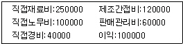

한식조리기능사 (2007-01-28 기출문제)
1과목: 식품위생 및 법규
1. 식품 등의 표기기준에 명시된 표시사항이 아닌 것은?
- 업소명
- 판매자 성명
- 성분명 및 함량
- 유통기한
(정답률: 80%)

2. 식품위생법령상에 명시된 식품위생감시원의 직무가 아닌 것은?
- 과대광고 금지의 위반 여부에 관한 단속
- 조리사 영양사의 법령준수사항 이행여부 확인지도
- 생산 및 품질관리 일지의 작성 및 비치
- 시설기준의 적합 여부의 확인검사
(정답률: 59%)
3. 식품위생법령상 집단급식소는 상시 1회 몇 이상에게 식사를 제공하는 급식소를 의미하는가?
- 20인
- 30인
- 40인
- 50인
(정답률: 92%)
4. 식품위생법규상 수입식품 검사결과 부적합한 식품 등에 대하여 취하여지는 조치가 아닌 것은?
- 수출국으로의 반송
- 식용외의 다른 용도로의 전환
- 관할 보건소에서 재검사 실시
- 다른 나라로의 반출
(정답률: 65%)
5. 허위표시 과대광고의 범위에 해당되지 않는 것은?
- 제조방법에 관하여 연구 또는 발견한 사실로서 식품학 영양학 등의 분야에서 공인된 사항의 표시광고
- 외국어의 사용 등으로 외국제품으로 혼동할 우려가 있는 표시광고
- 질병의 치료에 효능이 있다는 내용 또는 의약품으로 혼동할 우려가 있는 내용의 표시광고
- 다른 업소의 제품을 비방하거나 비방하는 것으로 의심되는 광고
(정답률: 75%)
6. 식품 속에 분변이 오염되었는지의 여부를 판별할 때 이용하는 지표균은?
- 장티푸스균
- 살모넬라균
- 이질균
- 대장균
(정답률: 82%)
7. 세균성 식중독 중에서 독소형은?
- 포도상구균식중독
- 장염비브리오균 식중독
- 살모넬라 식중독
- 리스테리아 식중독
(정답률: 83%)
8. 다음 중 유해성 표백제는?
- 롱가릿
- 아우라민
- 포름알데히드
- 사이클라메이트
(정답률: 53%)
9. 살모넬라에 대한 설명으로 틀린 것은?
- 그람음성 간균으로 동식물계에 널리 분포하고 있다.
- 내열성이 강한 독소를 생성한다.
- 발육 적온은 37℃이며 10℃이하에서는 거의 발육하지 않는다.
- 살모넬라균에는 장티푸스를 일으키는 것도 있다.
(정답률: 49%)
10. 장마가 지난 후 저장되었던 쌀이 적홍색 또는 황색으로 착색되어 있었다. 이러한 현상의 설명으로 틀린 것은?
- 수분 함량이 15%이상 되는 조건에서 저장할 때 특히 문제가 된다.
- 기후 조건 때문에 동남아시아 지역에서 곡류 저장 시 특히 문제가 된다.
- 저장된 쌀에 곰팡이류가 오염되어 그 대사산물에 의해 쌀이 황색으로 변한 것이다.
- 황변미는 일시적인 현상이므로 위생적으로 무해하다.
(정답률: 84%)
11. 식중독을 일으키는 버섯의 독성분은?
- 아마니타톡식
- 엔테로톡식
- 솔라닌
- 아트로핀
(정답률: 59%)
12. 화학물질에 의한 식중독의 원인물질과 거리가 먼 것은?
- 제조과정 중에 혼합되는 유해 중금속
- 기구, 용기, 포장 재료에서 용출 이행하는 유해물질
- 식품자체에 함유되어 있는 동식물성 유해물질
- 제조, 가공 및 저장 중에 혼입된 유해 약품류
(정답률: 71%)
13. 용어에 대한 설명 중 틀린 것은?
- 소독: 병원성 세균을 제거하거나 감염력을 없애는 것
- 멸균: 모든 세균을 제거하는 것
- 방부: 모든 세균을 완전히 제거하여 부패를 방지하는 것
- 자외선 살균: 살균력이 가장 큰 250~260nm의 파장을 써서 미생물을 제거하는 것
(정답률: 71%)
14. 식품에서 흔히 볼 수 있는 푸른곰팡이는?
- 누룩곰팡이속
- 페니실린움속
- 거미줄곰팡이속
- 푸사리움속
(정답률: 64%)
15. 우리나라에서 허가되어 있는 발색제가 아닌 것은?
- 질산칼륨
- 질산나트륨
- 아질산나트륨
- 삼염화질소
(정답률: 68%)
2과목: 식품학
16. 식품의 산성 및 알칼리성을 결정하는 기준 성분은?
- 필수지방산 존재 여부
- 필수아미노산 존재 유무
- 구성 탄수화물
- 구성 무기질
(정답률: 50%)
17. 다음 중 황 함유 아미노산은?
- 메티오닌
- 프로린
- 글리신
- 트레오닌
(정답률: 47%)
18. 카로틴은 동물 체내에서 어떤 비타민으로 변하는가?
- 비타민D
- 비타민B1
- 비타민A
- 비타민C
(정답률: 52%)
19. 녹색 채소 조리시 중조를 가할 때 나타나는 결과에 대 한 설명으로 틀린 것은?
- 진한 녹색으로 변한다.
- 비타민C가 파괴된다.
- 페오피틴이 생성된다.
- 조직이 연화된다.
(정답률: 52%)
20. 일반적으로 비스킷 및 튀김의 제품적정에 가장 적합한 밀가루는?
- 박력분
- 중력분
- 강력분
- 반강력분
(정답률: 73%)
21. 연제품 제조에서 어육단백질을 용해하며 탄력성을 주기 위해 꼭 첨가해야 하는 물질은?
- 소금
- 설탕
- 전분
- 글루타민산소다.
(정답률: 62%)
22. 불포화지방산을 포화지방산으로 변화시키는 경화유에는 어떤 물질이 첨가되는가?
- 산소
- 수소
- 질소
- 칼슘
(정답률: 65%)
23. 다음 냄새 성분 중 어류와 관계가 먼 것은?
- 트리메틸아민
- 암모니아
- 피페리딘
- 디아세틸
(정답률: 46%)
24. 효소에 대한 일반적인 설명으로 틀린 것은?
- 기질 특이성이 있다.
- .퇴적온도는 30~40℃정도이다.
- 100℃에서도 활성은 그래도 유지된다.
- 최적 ph는 효소마다 다르다.
(정답률: 68%)
25. 어떤 식품의 수분활성도(Aw)가 0.960이고 수증기압이 1.39일 때 상대습도는 몇%인가?
- .0.69%
- 1.45%
- 139%
- 96%
(정답률: 32%)
26. 붉은살 어류에 대한 일반적인 설명으로 맞는 것은?
- 흰살 어류에 비해 지질 함량이 적다.
- 흰살 어류에 비해 수분함량이 적다.
- 해저 깊은 곳에 살면서 운동량이 적은 것이 특징이다.
- 조기. 광어, 가자미 등이 해당된다.
(정답률: 52%)
27. 효소적 갈변반응에 의해 색을 나타내는 식품은?
- 분말 오렌지
- 간장
- 캐러멜
- 홍차
(정답률: 68%)
28. 유지의 산패를 차단하기 위해 상승제와 함께 사용하는 물질은?
- 보존제
- 발색제
- 항산화제
- 표백제
(정답률: 53%)
29. 다음 색소 중 동물성 색소는?
- 헤모글로빈
- 클로로필
- 안토시안
- 플라보노이드
(정답률: 77%)
30. 효소적 갈변 반응을 방지하기 위한 방법이 아닌 것은?
- 가열하여 효소를 불활성화 시킨다.
- 효소의 최적조건을 변화시키기 위해 pH를 낮춘다.
- 아황산가스 처리를 한다.
- 산화제를 첨가한다.
(정답률: 42%)
3과목: 조리이론과 원가계산
31. 우유의 살균처리방법 중 71.1~75℃로 15~30초간 가열처리하는 살균처리는?
- 저온살균법
- 초저온살균법
- 고온단시간살균법
- 초고온살균법
(정답률: 63%)
32. 다음 중 향신료와 그 성분이 잘못 연결된 것은?
- 후추-차비신
- 생강-진저롤
- 참기름-세사몰
- 겨자-캡사이신
(정답률: 87%)
33. 식품의 갈변에 대한 설명 중 잘못된 것은?
- 감자는 물에 담가 갈변을 억제할 수 있다.
- 사과는 설탕물에 담가 갈변을 억제할 수 있다.
- 냉동 채소의 전처리로 블렌칭을 하여 갈변을 억제할 수 있다.
- 복숭아. 오렌지 등은 갈변 원인물질이 없기 때문에 미리 껍질을 벗겨 두어도 변색하지 않는다.
(정답률: 82%)
34. 생선을 조릴 때 어취를 제거하기 위하여 생강을 넣는다. 이때 생선을 미리 가열하여 열변성 시킨 후에 생강을 넣는 주된 이유는?
- 생강을 미리 넣으면 다른 조미료가 침투되는 것을 방해하기 때문에
- 열변성 되지 않은 어육단백질이 생강의 탈취작용을 방해하기 때문에
- 생선의 비린내 성분이 지용성이기 때문에
- 생강이 어육단백질이 응고를 방해하기 때문에
(정답률: 57%)
35. 다음 중 어떤 무기질이 결핍되면 갑상선종이 발생 될 수 있는가?
- 칼슘
- 요오드
- 인
- 마그네슘
(정답률: 77%)
36. 영양소와 해당 소화효소의 연결이 잘못된 것은?
- 단백질-트립신
- 탄수화물-아밀라제
- 지방-리파아제
- 설탕-말타아제
(정답률: 49%)
37. 다음 중 신선하지 않은 식품은?
- 생선: 윤기가 있고 눈알이 약간 튀어나온 듯한 것
- 고기: 육색이 선명하고 윤기 있는 것
- 계란: 껍질이 반들반들하고 매끄러운 것
- 오이: 가시가 있고 곧은 것
(정답률: 86%)
38. 밥짓기 과정의 설명으로 옳은 것은?
- 쌀을 씻어서 2~3시간 푹 불리면 맛이 좋다.
- 햅쌀은 묵은 쌀보다 물을 약간 적게 붓는다.
- 쌀은 80~90℃에서 호화가 시작된다.
- 묵은 쌀인 경우 쌀 중량의 약 2.5배 정도의 물을 붓는다.
(정답률: 63%)
39. 전분의 호정화에 대한 설명으로 옳지 않은 것은?
- 호정화란 화학적 변화가 일어난 것이다.
- 호화된 전분보다 물에 녹기 쉽다.
- 전분을 150~190℃에서 물을 붓고 가열 할 때 나타나는 변화이다
- 호정화 되면 덱스트린이 생성된다.
(정답률: 57%)
40. 굵은 소금이라고도 하며, 오이지를 담글 때나 김장 배추를 절이는 용도로 사용하는 소금은?
- 천일염
- 재제염
- 정제염
- 꽃소금
(정답률: 83%)
41. “완두콩밥/된장국/장조림/명란알 찜/두부조림/생선구이” 식단 구성 중 편중되어 있는 영양가의 식품군은?
- 탄수화물군
- 단백질군
- 비타민/무기질군
- 지방군
(정답률: 85%)
42. 밀가루 반죽에 달걀을 넣었을 때의 달걀의 작용으로 틀린 것은?
- 반죽에 공기를 주입하는 역할을 한다.
- 팽창제의 역할을 해서 용적을 증가시킨다.
- 단백질 연화 작용으로 반죽을 연하게 한다.
- 영양, 조직 등에 도움을 준다.
(정답률: 36%)
43. 냉동어의 해동법으로 가장 좋은 방법은?
- 저온에서 서서히 해동시킨다.
- 얼린 상태로 조리한다.
- 실온에서 해동시킨다.
- 뜨거운 물속에 담가 빨리 해동시킨다.
(정답률: 74%)
44. 어떤 음식의 직접원가는 500원, 제조원가는800원 총원가는 1000원이다 . 이 음식의 판매관리비는?
- 200원
- 300원
- 400원
- 500원
(정답률: 61%)
45. 다음 중 유지의 산패에 영향을 미치는 인자에 대한 설명으로 맞는 것은?
- 저장 온도가 0℃이하가 되면 산패가 방지된다.
- 광선은 산패를 촉진하나 그 중 자외선은 산패에 영향을 미치지 않는다.
- 구리, 철은 산패를 촉진하나 납, 알루미늄은 산패에 영향을 미치지 않는다.
- 유지의 불포화도가 높을수록 산패가 활발하게 일어난다.
(정답률: 53%)
46. 1일 2500㎉를 섭취하는 성인 남자 100명이 있다. 총 열량의 60%를 쌀로 섭취한다면 하루에 쌀 약 몇 ㎏정도가 필요한가? (단, 쌀100g은 340㎉이다)
- 12.70㎏
- 44.12㎏
- 127.02㎏
- 441.18㎏
(정답률: 47%)
47. 위탁급식(전문급식업체)으로 운영되는 단체급식의 장점이 아닌 것은?
- 과학적인 운영으로 운영비가 절약된다.
- 영양관리, 위생관리가 철저하다.
- 복잡한 노무관리의 직접적인 책임을 탈피할 수 있다.
- 인건비와 대량 구입으로 식품원가를 절감 할 수 있다.
(정답률: 31%)
48. 다음 중 조리기기와 그 용도의 연결이 옳은 것은?
- 그라인더-고기를 다질 때
- 필러-난백 거품을 낼 때
- 슬라이서-당근의 껍질을 벗길 때
- 초퍼-고기를 일정한 두께로 저밀 때
(정답률: 51%)
49. 다음 원가요소에 따라 산출한 총원가로 옳은 것은?

- 390000원
- 510000원
- 570000원
- 610000원
(정답률: 63%)
50. 달걀의 열응고성에 대한 설명 중 옳은 것은?
- 식초는 응고를 지연시킨다.
- 소금은 응고 온도를 낮추어 준다.
- 설탕은 응고온도를 내려주어 응고물을 연하게 한다.
- 온도가 높을수록 가열시간이 단축되어 응고물은 연해진다.
(정답률: 39%)
4과목: 공중보건
51. WTO가 규정한 건강의 정의는?
- 질병이 없고, 육체적으로 완전한 상태
- 육체적, 정신적으로 완전한 상태
- 육체적 완전과 사회적 안녕이 유지되는 상태
- 육체적, 정신적, 사회적 안녕의 완전한 상태
(정답률: 79%)
52. 감각온도(체감온도)의 3요소에 속하지 않는 것은?
- 기온
- 기습
- 기압
- 기류
(정답률: 80%)
53. 전염병과 전염경로의 연결이 틀린 것은?
- 성병-직접접촉
- 폴리오-공기전염
- 결핵-개달물 전염
- 파상풍-토양전염
(정답률: 42%)
54. 다음 중 잠복기가 가장 긴 전염병은?
- 한센병
- 파라티푸스
- 콜레라
- 디프테리아
(정답률: 65%)
55. 다음 중 돼지고기에 의해 감염될 수 있는 기생충은?
- 선모충
- 간흡층
- 편충
- 아니사키스충
(정답률: 76%)
56. 일반적으로 사용되는 소독약의 희석농도로 가장 부적합한 것은?
- 알코올 : 75%에탄올
- 승홍수 : 0.01%의 수용액
- 크레졸 : 3~5%의 비누액
- 석탄산 : 3~5%의 수용액
(정답률: 46%)
57. 디피티(D.P.T)접종과 관계없는 질병은?
- 디프테리아
- 콜레라
- 백일해
- 파상풍
(정답률: 69%)
58. 하천수에 용존산소가 적다는 것은 무엇을 의미하는가?
- 유기물 등이 잔류하여 오염도가 높다.
- 물이 비교적 깨끗하다.
- 오염과 무관하다.
- 호기성 미생물과 어패류의 생존에 좋은 환경이다.
(정답률: 76%)
59. 폐흡충 증의 제 1,2 중간숙주가 순서대로 옳게 나열된 것은?
- 왜우렁이, 붕어
- 다슬기. 참게
- 물벼룩, 가물치
- 왜우렁이, 송어
(정답률: 65%)
60. 소독제이 살균력을 비교하기 위해서 이용되는 소독약은?
- 석탄산
- 크레졸
- 과산화수소
- 알코올
(정답률: 73%)